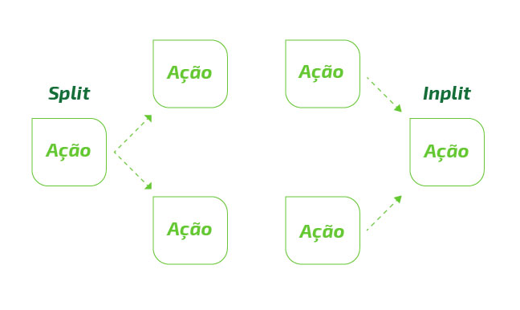

Instrumentos de Renda Variável,
Renda Fixa e Derivativos
Instrumentos de Renda Variável,
Renda Fixa e Derivativos
Tópicos abordados
Neste segundo capítulo, você vai relembrar os seguintes conceitos:
Instrumentos de renda variável
Instrumentos de renda fixa
Derivativos
Certificados de Operações Estruturadas - COE
Negociação, liquidação e custódia
Ofertas públicas de valores mobiliários
Código ANBIMA de regulação e melhores práticas para ofertas públicas de distribuição e aquisição de valores mobiliários
Em sua função de consultor de investimentos,
é importante conhecer os produtos financeiros disponíveis no mercado, suas características,
riscos e rentabilidades, para prestar informações seguras e de qualidade.
As empresas, quando precisam de recursos possuem algumas alternativas:
Emitir novas ações: captação de recursos através do aumento do Patrimônio Líquido;
Empréstimo em Bancos: geralmente com um custo mais elevado;
Emissão de papéis para captação de recursos diretamente de investidores (Debêntures).
Instrumentos de renda variável:
Um investimento é de renda variável quando não se pode determinar o rendimento nominal do investimento, pode valorizar ou desvalorizar, mas não tem rendimento atrelado. Apresenta mais oportunidades de ganhos e consequentemente maiores riscos. Dependem de eventos futuros. Exemplos: Ações, derivativos, ouro, commodities e outros.
Mercados
Bolsa de Valores:
Ambiente regulamentado pela CVM onde ocorrem negociações de ações de empresas de capital aberto,
que cumprem as exigências deste mercado, além de mercadorias e derivativos. A entrega dos ativos e pagamento dos mesmos é
garantida pela Bolsa.
As modalidades de operação em Bolsa de Valores são: mercado a vista, mercado a termo e mercado de opções.
Mercado de Balcão:
São contratos negociados entre as partes diretamente.
Mercado organizado:
Ambiente informatizado e transparente de negociação, com mecanismos de autorregulação SOMA (Sociedade Operadora de Mercado de Ativos, é o chamado mercado de acesso, onde são negociadas ações que ainda não têm porte para ir ao pregão da BM&FBovespa).
Mercado não organizado:
não supervisionado por entidade autorreguladora. Negociação direta.
O que é uma ação?
Ações São títulos emitidos por sociedades anônimas que representam a propriedade de uma fração do capital social da companhia.
Quem investe em ações é proprietário de uma parte da sociedade anônima,
tornando-se acionista e participando de seus resultados.
Uma ação é a menor parte do capital de uma sociedade anônima. As ações são escriturais, comprovadas por extratos, certificados ou Recibos DR (Depositary Receipt).
Para a negociação pública no mercado de valores mobiliários é necessário o registro na CVM.
Qualquer pessoa pode ser sócio. Suas ações podem ser vendidas em bolsa de valores, desde que atendidas as exigências da CVM. Pulverização de ações.
Aquisição de capital pode ser feita apenas mediante autorização dos demais sócios em assembleia. geralmente são poucos sócios.
Categoria das ações
Ordinárias
Garantem o direito a voto nas assembleias de acionistas, onde são tomadas as decisões
estratégicas da Companhia. O acionista controlador é quem detém a maioria simples das ações ordinárias
(50% mais uma ação).
Preferenciais
Garantem a preferência no recebimento de dividendos em relação às ordinárias.
geralmente recebem um percentual maior de remuneração em relação às ordinárias (no mínimo 10%),
mas não dão direito a voto. Caso não haja distribuição de resultados por 3 anos consecutivos,
as preferenciais adquirem o direito a voto. Não pode ultrapassar 50% das ações da empresa.
Dica:
Ordinária: dá ordens (voto)
Preferencial: tem preferência no dinheiro (dividendos)
Tipos de acionistas
Acionista
Controlador
Possui 50% das ações + 1 ação. Tem o comando, pois cada ação dá direito a um voto.
Pode haver blocos de controle,
onde acionistas se reúnem para ter o controle decisório.
Acionista Minoritário
Possui o direito de voto. No entanto, como sua opinião é minoritária,
não impactará no resultado, apesar de ter o direito de se manifestar e ser representado.
Caso não concorde, tem o direito de retirada da sociedade.
Certificado de depósitos de ações
adr
bdr
Conceito
Recibos de empresas não americanas negociados nos EUA.
Recibos de empresas não brasileiras negociadas no Brasil.
Nível I
Apenas no mercado de balcão. Não exige US GAAP(padrão de contabilidade internacional).
Negociação restrita a investidores institucionais. Os BDR não patrocinados e o nível I são considerados investimento no exterior.
Nível II
Negociado em bolsa, sem emissão de novas ações. US GAAP.
Negociadas em bolsa. Considerados investimentos no país.
Nível III
Negociado em Bolsa, pode ter novas emissões. US GAAP.
Negociadas em bolsa. Considerados investimentos no país.
*US GAAP: padrão de demonstrações contábeis norte-americano, exigido nos níveis II e III.
Assembleia Geral Ordinária (AGO):
Deve acontecer anualmente, nos 4 primeiros meses seguintes ao término do exercício social, com as seguintes atribuições:
Analisar as contas do administrador e deliberar sobre as demonstrações financeiras por eles apresentadas.
Deliberar sobre a destinação do lucro líquido do exercício e a distribuição de lucros.
Aprovar a correção da expressão monetária do capital social.
Eleger os administradores e os membros do conselho fiscal, quando for o caso.
Assembleia Geral Extraordinária (AGE):
Trata de assuntos de interesse dos sócios, não previstos na AGO, como por exemplo, alterações no contrato social ou estatuto.
Direitos dos acionistas
Voto, participação nos lucros, participação no acervo em caso de liquidação, fiscalização, preferência de subscrição e retirada da sociedade.
Voto: o acionista tem direito a votar nas Assembleias: uma ação ordinária corresponde a um voto. A ação preferencial não tem direito a voto, com exceção do caso de ficar 3 anos sem receber dividendos.
Participação nos lucros: os lucros serão divididos proporcionalmente à quantidade e categoria de ações (ordinárias ou preferenciais).
Participação no acervo em caso de liquidação: os acionistas participam do acervo final na liquidação da empresa, como sócios são os últimos na escala de recebimento.
Fiscalização: o acionista elege o conselho fiscal, responsável por fiscalizar a companhia em seu nome.
Preferência de subscrição: ocorre quando a empresa necessita de recursos para financiar investimentos ou modificar sua estrutura de capital e decide lançar novas ações no mercado. o acionista tem o direito de subscrever ações em quantidade proporcional à já possuída. Para incentivar o investimento adicional nas novas ações a empresa procura estabelecer um preço de emissão inferior à cotação em bolsa de valores. Se o acionista quiser, ele pode vender o seu direito (bônus de subscrição). Quem adquire um bônus de subscrição tem o mesmo direito do acionista que o recebeu.
Retirada da sociedade: o acionista tem o direito de vender livremente suas ações, e, em não o podendo fazer, caso discorde dos rumos da empresa, retirar-se da sociedade mediante aprovação da Assembleia geral ou demanda judicial.
Dica: Direito de subscrição confere o direito de comprar novas ações e manter sua participação relativa no capital.
Remuneração e benefícios dos acionistas
① Ganho (ou perda) de capital decorrente da venda da ação no mercado;
② Renda decorrente da distribuição do lucro gerado pela empresa e outros proventos:
Dividendos: Distribuição dos lucros da Cia. obrigatória, deve ser prevista em estatuto (caso não haja previsão, será no mínimo 50%), distribuídos na conta corrente do acionista. Não incide IR (PF e PJ).
Bonificações: São distribuídas proporcionalmente novas ações (gratuitamente), devido aumento de capital por incorporação de reservas e lucros; não têm IR.
Juros sobre capital próprio: Remuneração facultativa paga na conta corrente do investidor. Incide 15% IR.
Dividendos
Juros ao Capital
Bonificação
Obrigatoriedade
Obrigatório
Facultativo
Facultativo
Imposto de renda
Não tem
15% na fonte
Não tem
Destinação
Pago na conta corrente do investidor
Pago na conta corrente do investidor
Aumenta a quantidade de ações
Ações ex (dividendos, juros, bonificações): É o que se diz de uma ação que está sendo negociada sem os direitos da distribuição e lucros de períodos anteriores,
pois já foram provisionados em nome do acionista anterior.
O valor de mercado de uma ação também é precificado de acordo com os resultados a distribuir da empresa.
Após a distribuição dos resultados, o valor das ações pode sofrer o impacto desta distribuição.
A empresa comunica que serão distribuídos dividendos para os detentores das ações em uma certa data,
os valores ficam provisionados até uma data futura de efetivo pagamento.
Neste período, se as ações forem negociadas, terão impacto em seu preço.
Dica: Ações ex são negociadas sem o direito dos dividendos, juros ou bonificação já provisionados.
Depois disso, este direito é reestabelecido.
Oferta primária e oferta secundária
Oferta Primária (Underwriting):
Na oferta primária de ações a empresa faz uma emissão de novas ações para colocação junto
ao público. Desta forma, a empresa capta novos recursos,
impactando a relação capital próprio/ capital de terceiros e aumentando o patrimônio líquido.
Oferta Secundária (Block Trade):
Na oferta secundária de ações não ocorre emissão de novas ações. A oferta secundária é a venda de ações no mercado (exemplo: em Bolsa). Um grande investidor pode fazer uma oferta de um grande lote, O que é? conhecido como Block trade (venda de um bloco de ações), o que pode impactar significativamente os preços no mercado.
Despesas de negociação em ações:
Corretagem - Cobrada pela Corretora de valores sobre cada ordem de compra ou de venda do dia.
Emolumento - É a taxa cobrada pela Bolsa de Valores na negociação de ações.
Custódia - Cobrada pela Instituição Financeira que faz a guarda de títulos e valores mobiliários e do exercício de direitos (bonificações, dividendos ou direitos de subscrição) na respectiva Câmara de Custódia.
Aspectos relevantes na precificação: determinação de preço:
① P/L: Índice Preço/Lucro: Indicador que avalia o prazo em anos para recuperar o capital investido, pela estimativa de lucro por ação. PL: cotação da ação/lucro da ação. Quanto menor, melhor, , menos tempo para recuperar o valor investido.
② VE/EBITDA: Apura-se o Valor da Empresa dividindo-se pelo EBITDA (Earning Before Interest, Taxes, Depreciation and Amortization): Lucro antes de juros, impostos, depreciações e amortizações. É parecido com o indicador P/L, analisando o total da empresa.
③ Análise técnica (ou grafista): Estuda o comportamento do preço dos ativos no passado, considerando a premissa de que os preços se movem em tendências. Tem um suporte, uma linha de tendência de preço mínimo, e uma resistência, que é uma orientação de preço máximo, que quando rompidos estabelecem uma nova tendência. É indicado para investidores que objetivam o curto prazo, comprando com o preço na baixa e vendendo na alta (analisa o passado para projetar movimentos).
④ Análise fundamentalista: é uma forma de determinar o valor de um título, concentrando-se em fatores que afetam o negócio de uma empresa e suas perspectivas futuras. Análise econômico-financeira e mercadológica.
A tendência é determinada por fatores econômicos e pelo próprio desempenho da empresa. Dados Econômico–Financeira: Balanço geral, Relatório Anual ou Informações Trimestrais, análise de balanço e os projetos futuros (analisa o estado atual e futuro).
⑤ Desdobramento e agrupamento de ações: São eventos para melhorar a liquidez (negociabilidade) das ações, através de adequação de valor por ação sem alterar o valor total.
⑥ Split: Desdobramento de ações existentes. Aumenta o número de ações em circulação sem alterar o total. É como se trocasse uma nota de R$ 100,00 por 10 notas de R$ 10,00.
⑦ Inplit: Agrupamento de ações existentes. Reduz o número de ações em circulação sem alterar o PL. É como se trocasse 100 moedas de R$ 1,00 por 10 notas de R$ 10,00.

Práticas de boa governança corporativa
São princípios e mecanismos pelos quais as organizações são dirigidas,
monitoradas e incentivadas. São recomendações objetivas, alinhando interesses com a finalidade de preservar e otimizar o valor da organização, bem percebidas pelo mercado,
facilitando seu acesso ao capital e contribuindo para a sua longevidade.
A BMEF Bovespa dividiu as empresas em Novo Mercado NivelI e Nivel II no que diz respeito às boas práticas de governança corporativa.
A B3 instituiu princípios básicos para classificar as
empresas de acordo com regras de governança, como por exemplo: transparência, equidade, prestação de contas e responsabilidade corporativa.
De acordo com as regras de governança, as empresas são classificadas como:
Novo Mercado (NM)
Empresas com a adoção de práticas de governança corporativa adicionais aO que é? exigido pela
regulamentação brasileira. A valorização e a liquidez das ações são influenciadas positivamente
pelo grau de segurança oferecido pelos direitos concedidos aos acionistas e pela qualidade das
informações prestadas pelas companhias. As empresas do Novo Mercado só podem emitir ações ordinárias.
Caso alguém queira comprar o controle acionário deste tipo de empresa,
deverá fazer oferta aos minoritários também (Tag along de 100% para todos os acionistas).
Nível 2 (N2) e Nível 1 (N1)
São segmentos especiais de listagem de empresas para proporcionar um ambiente de negociação que estimule o
interesse dos investidores e a valorização das companhias. Oferecem a seus acionistas melhorias nas práticas de
governança corporativa, ampliam os direitos societários dos acionistas minoritários e aumentam a transparência das companhias,
por meio da divulgação de maior volume de informações e de melhor qualidade, facilitando o acompanhamento de sua performance.
Possuem mais exigência que as empresas classificadas como tradicionais e menos exigências que o Novo Mercado.
Eventos:
Tag along (extensão do prêmio de controle)
Trata-se da extensão do prêmio de controle, direito conferido a acionistas minoritários em caso de alienação (venda) de ações
realizada pelos controladores da companhia. A alienação, direta ou indireta, do controle de companhia aberta somente pode ser
contratada sob a condição, suspensiva ou resolutiva, de que o adquirente se obrigue a fazer oferta pública de aquisição das ações
com direito a voto de propriedade dos demais acionistas da companhia, de modo a lhes assegurar o preço no mínimo igual a
80% do valor pago por ação com direito a voto, integrante do bloco de controle (NM terá 100% - ver próximo quadro).
Lock-up period
É o período após a colocação primária das ações (novas ações), durante o qual os controladores (acionistas originais) não podem vender suas ações.
As empresas que se listarem no Novo Mercado-NM devem seguir a seguinte regra: até o 6º mês seguinte,
à oferta inicial, os controladores não podem vender nenhuma ação e do 7º mês até o final do 1º ano, após a emissão, podem vender, no máximo, 40% de suas ações.
O objetivo do mecanismo de Lock-up period é transmitir maior segurança aos investidores de que os empreendedores,
ao realizarem uma oferta de ações, não pretendem se desfazer das ações da empresa, mas sim buscar sócios para financiar a expansão de suas atividades.
Free float
Flutuação livre. Refere-se às ações que uma empresa destina à livre negociação na Bolsa de valores. Quanto maior o Free float, maior a liquidez diária das ações de uma empresa, pois há mais ações a negociar.
Câmara de Arbitragem de Mercado
É o foro mais adequado para resolver disputas societárias ou relacionadas ao mercado de capitais. A CAM oferece um ambiente independente, sigiloso, ágil e econômico para a solução de controvérsias, pautado nas diretrizes da Lei de Arbitragem.
A quantidade de membros no Conselho aumenta para o mínimo de 5, com pelo menos 1 independente, e câmara de arbitragem.
Só podem emitir ações ordinárias, Tag along de 100% e exigência de “lock up period”.
RESUMO DE GOVERNANÇA CORPORATIVA
Legislação Lei 10.303 (Tradicional)
Nível 1: Requisitos de Transparência
Nível 2: Requisitos + Transparência
Novo Mercado
Tag along
80% ON
80% ON e PN
100% ON e 80% PN
100% ON
Proporção PN/ON
50% (para novas companhias)
100% ON
Free float
Não há
25%
Conselho de Administração
Mínimo 3 membros, eleitos pela Assembléia Geral, com mandato não superior a 3 anos, permitida a reeleição
Mínimo 5 membros, com mandato de 2 anos, permitida a reeleição. 20% dos Conselheiros devem ser independentes.
Câmara de Arbitragem de Mercado
Não
Sim
Lock up Períod (Apenas IPO)
100% 6 meses 60% 1 ano
Circuit Breaker (corte de circuito): mecanismo de interrupção de um pregão.
Queda de 10%: se a Bolsa cair 10%, será paralisada por 30 minutos.
Queda de 20%: se a queda persistir e atingir 20%, a B3 suspende as atividades e define um novo prazo para reabertura do mercado, que pode ser no dia seguinte.
Lote-padrão: é uma quantidade de ações definida pela Bolsa de valores para facilitar as negociações. Exemplo: lotes de 100 ações. Caso queira negociar em quantidades inferiores a um lote padrão, deverá cadastrar no código da ação a letra F de fracionado. Exemplo: PETR4F.
Clubes de Investimento - O Clube de Investimento é um condomínio constituído
por no mínimo 3 e no máximo 50 pessoas físicas, para aplicação de recursos em títulos e valores mobiliários.
Composição carteira: Mínimo de 67% em ações.
Podem exceder 50 cotistas:
a) Se integrados por funcionários, empregados ou contratados de uma mesma empresa.
b) Se integrados por membros ligados por vínculos associativos que formem uma coletividade determinada, desde que previamente autorizada pela CVM.
Tributação: 15% independente do prazo. Não tem IOF.
Fundos de Ações X Clubes de Investimentos
Condição
Fundo de Ações
Clube de Investimento
Composição
Mínimo de 67% em ações
Mínimo de 67% em ações
Tributação IOF
Não tem
Não tem
Tributação IR
15% no resgate (fonte)
15% no resgate (fonte)
Número de participantes IR
Ilimitado, pode ser 1
De 3 a 50 (se vínculo, ilimitado)
Participação nas decisões
Por adesão
Pode opinar
Tributação em renda variável
Fato gerador: ganhos líquidos de ações, BDR negociadas em bolsa, ouro, ativos de liquidação futura e
alienação de participação societária por PJ fora da bolsa.
Base de cálculo: ganho líquido auferido no mês, deduzidas os custos e
despesas necessários à realização das operações. É admitido compensação de perdas de meses anteriores.
Alíquotas
15% sobre o ganho de capital líquido sendo o próprio contribuinte responsável pelo recolhimento do imposto devido, via DARF, que deverá ser pago até o último dia do mês seguinte ao fato gerador.
Isenções: Pessoa Física cujo valor mensal de alienação seja até R$ 20.000,00.
0,005% sobre o valor da alienação (venda) como antecipação do imposto devido (compensável), sendo a instituição intermediadora responsável pelo recolhimento.
Não há IOF.
Operações Day Trade
São operações iniciadas e liquidadas no mesmo dia, do mesmo ativo:
Na fonte: IR compensável de 1% sobre resultado positivo diário, a título de antecipação.
Mensalmente: 20% sobre os ganhos recolhido via DARF pelo próprio contribuinte.
Não tem isenção de IR.
Não há a isenção para vendas até R$ 20.000.
Compensação de IR retido na fonte: O IR retido na fonte poderá ser:
Deduzido do imposto sobre ganhos líquidos apurados no mês sobre alienação de ações;
Compensado com o imposto incidente sobre ganhos líquidos dos meses subsequentes;
Compensado na declaração de ajuste anual se após as deduções previstas acima ainda houver saldo de imposto retido.
Compensação de perdas: As perdas decorrentes de
operações realizadas com ações podem ser compensadas da base de cálculo de ganhos de períodos posteriores.
Instrumentos de renda fixa
É qualquer contrato que resulte em ativo financeiro para um lado e passivo financeiro para o outro, ou seja, quando você faz uma aplicação, você empresta o seu dinheiro para a Instituição Financeira, que fica lhe devendo até o dia do vencimento ou resgate.
Títulos de Crédito ou Títulos de Emissão de Dívida: são “empréstimos” que o investidor faz ao emissor.
A renda fixa pode ser:
Prefixada: quando o valor dos rendimentos é determinado no momento da aplicação (quanto vai render).
Pós fixada: quanto é determinada a taxa, mas o valor só será conhecido no resgate (o que vai remunerar).
Principais conceitos e características de instrumentos de renda fixa:
Data de emissão
Data de origem do título.
Valor nominal
É o valor de face do título.
PU
Preço unitário do título. É o preço de negociação em determinada data.
Juros acruados
Valor da remuneração do título desde a data de emissão até o momento atual.
Cupom
É o pagamento periódico de juros. Ajusta a remuneração ao custo de oportunidade do mercado.
Títulos zero cupom
Títulos puros, ou sem emissão de juros além do índice de correção.
Vencimento
Determinado na escritura, pode ser vencimento único ou por séries.
Amortizações
Pode haver previsões de amortizações parciais em casos previstos na escritura.
Aquisição facultativa (recompra)
Debêntures podem ser emitidas com cláusula de recompra, desde que com valor igual ou menor.
Covenant
São garantias indiretas, avaliações do investidor ao adquirir um título. Exemplo: limite de endividamento (se for baixo, indica mais segurança ou garantia de recebimento).
Cross defaul
Cláusula que garante cobrar uma dívida antecipada (mesmo que ainda não vencida), se houver inadimplência em outro título do emissor no mercado. Em outros contratos é comum ter “cross defaul interno”, por exemplo, em um título parcelado, se ficar inadimplente uma parcela, as vincendas consideram-se vencidas também, para facilitar a execução.
Títulos públicos federais
Os títulos públicos são papéis de renda fixa, emitidos pelo Tesouro Nacional,
com o objetivo de cobrir o déficit público da União. Eles representam a dívida
interna do Brasil e por serem emitidos pelo governo, não contam com a garantia do FGC.
Tesouro Selic ou Letra Financeira do Tesouro - LFT
Remuneração pela taxa Selic diária, acompanha as oscilações do mercado, por isso, é considerado o título mais conservador do mercado.
Tesouro prefixado: Letra do Tesouro Nacional ou LTN
Remuneração prefixada, porém o título é vendido com desconto, como se fosse uma antecipação de recebível.
Tesouro prefixado com juros semestrais ou Nota do Tesouro Nacional série F - NTN-F
A remuneração é prefixada, porém os pagamentos dos juros são semestrais.
Tesouro IPCA+ com juros semestrais ou Nota do Tesouro Nacional série B - NTN-B
Paga os juros semestralmente (juros periódicos são chamados de cupom de juros).
Tesouro IPCA+ ou NTN-B
Principal Paga juros somente no final.
Tesouro IPCA+
Corrigida pelo IPCA + juros.
TÍTULO PÚBLICO
LTN
LFN
NTN-B
NTN-B Principal
NTN-F
Denominação atual
Tesouro prefixado
Tesouro Selic
Tesouro IPCA+
Tesouro IPCA+
Tesouro prefixado
Rentabilidade
Prefixada vendida com desconto ou deságio sobre o valor de face.
Pós fixado pela Selic diária
Tesouro IPCA+ cupom** de juros semestrais
IPCA+ juros no final
Prefixada
O Tesouro Nacional
é o órgão central responsável pela administração financeira do país. Emite títulos públicos e os resgata em seu vencimento.
Já o Tesouro Direto
é um Programa do Tesouro Nacional, desenvolvido em parceria com a B3 para venda de títulos públicos federais para pessoas físicas, por meio da internet.
Valor mínimo: 0,01 título, respeitado um mínimo de R$ 30,00.
É importante o investidor conhecer o seu perfil, riscos de mercado e características de cada título, assim como, a adequação a seus objetivos antes de investir.
Exemplo:
um título público vendido antes de seu vencimento irá ser cotado pela taxa de mercado, sendo-lhe aplicado um ágio ou deságio para ajustar as condições.
Leilões do Banco Central para colocação ou recompra de títulos (open Market):
Leilão formal: evento em que participam todas as Instituições Financeiras.
Leilão informal: também conhecido como “Go around”,
participam apenas os Dealers e Instituições Financeiras legalmente autorizadas a atuar no mercado em nome do BCB.
Os títulos podem ser negociados no mercado primário, quando há geração de caixa para o governo, ou no mercado secundário, com a troca de reservas bancárias mantidas em títulos públicos pelos bancos ou negociações entre investidores. Não há geração de caixa para o governo, pois os títulos apenas trocam de mãos e isso dá liquidez ao mercado.
Custos para o investidor: 0,25% ao ano sobre o valor dos títulos para a BMF&Bovespa para guarda,
informações e movimentações. A taxa cobrada pela Instituição Financeira é livremente pactuada entre as partes.
OPERAÇÕES COMPROMISSADAS
É o empréstimo de um dia com lastro em títulos públicos, também denominados “venda de títulos com compromisso de recompra” assumido pelo vendedor, conjugado com o compromisso da outra parte, com prazo de um dia útil.
Em virtude de seu lastro em títulos públicos, assumem tais status para composição de carteiras de fundos de investimento nos limites de concentração.
Títulos emitidos por bancos para captação de recursos (depósitos a prazo).
A remuneração pode ser pós-fixada (TR, CDI ou Selic) ou prefixada. Podem ser emitidos com período de carência ou com liquidez diária.
O Imposto de Renda será de acordo com o prazo, tabela regressiva e IOF se resgatada até 29 dias.
Risco de crédito: é o risco da Instituição Financeira ser liquidada. É menor em grandes bancos de varejo e é mitigado pelo FGC.
Risco de liquidez: podem ter cláusula de recompra ou vencimento antecipado, o que comumente é chamado de liquidez diária após a carência. Quanto maior a carência, menor a liquidez.
Risco de mercado: as taxas podem oscilar ao longo do tempo. Um CDB prefixado “trava” o rendimento do título, então se os juros subirem no mercado, este papel não irá acompanhar porque já foi prefixado, O que é? chamado de risco de mercado (o mercado sobe e o rendimento não acompanha, pois está travado). Porém, como o CDB pós-fixado acompanha o mercado, o risco reduz porque vai andar na mesma direção.
Depósito a prazo com garantia especial do fundo garantidor de crédito (DPGE)
É um título de renda fixa (depósito a prazo) criado para auxiliar Instituições Financeiras – bancos comerciais, múltiplos, de desenvolvimento, de investimento, além de sociedades de crédito, financiamento e investimentos e caixas econômicas – de porte pequeno e médio a captar recursos em grandes volumes.
Assim, confere ao seu detentor um direito de crédito contra o emissor. Destinado a investidores de Pessoa Física e jurídica. A garantia do FGC é de até R$20 milhões por CPF/CNPJ.
Remuneração: pré ou pós-fixada. O prazo de resgate é determinado no momento da contratação, mas não pode ser inferior a 6 meses nem superior a 36. Também não pode ser resgatado antecipadamente nem parcialmente.
LCA - Letra de Crédito do Agronegócio
É um título de crédito emitido por Instituições Financeiras públicas ou privadas com o objetivo de obter recursos para financiar o setor agrícola e, negociados pelos bancos, cooperativas de crédito ou corretoras, com seus clientes/associados.
O investidor adquire um produto de emissão da Instituição Financeira, ou seja, o risco de crédito se restringe a ela, que é custodiado na B3 com lastro em título de crédito do agronegócio. Possuem a garantia do Fundo Garantidor de Crédito (FGC), pois são depósitos a prazo de IF. Há isenção de Imposto de Renda para Pessoa Física. Se for pessoa jurídica, terá IR de acordo com a tabela decrescente de Renda Fixa. Como a carência mínima é 90 dias, não há IOF.
LCI - Letra de Crédito Imobiliária
É um título de renda fixa com lastro em créditos imobiliários, garantidos por hipoteca ou alienação fiduciária de um bem imóvel. Possuem emissão exclusiva de Instituições Financeiras públicas ou privadas, autorizadas pelo Banco Central.
Possuem a garantia do Fundo Garantidor de Crédito (FGC). Há isenção de Imposto de Renda para Pessoa Física, mas se for pessoa jurídica terá IR de acordo com a tabela decrescente de renda fixa. Como a carência mínima é 90 dias, não há IOF. A Instituição Financeira deverá lastrear a emissão com contratos de crédito imobiliário.
Risco de crédito: no caso de inadimplência, as LCA/LCI contam com a garantia do FGC, pois são emitidas por bancos.
Risco de liquidez: as LCA/LCI são emitidas com um prazo de carência de no mínimo 90 dias. Após a carência, possuem liquidez diária.
Risco de mercado: as LCA/LCI possuem remuneração determinada na emissão, podendo ser pré ou pós-fixada. Os papéis com remuneração pós-fixada acompanham o mercado. Os papéis com remuneração prefixada possuem risco de mercado quando as taxas de juros no mercado subirem, pois está “travada” na remuneração pactuada.
Poupança
A poupança é o mais tradicional de todos os investimentos e consiste em uma conta de depósito com crédito periódico de rendimentos.
- Investimento simples, que admite depósitos de pequenas quantias.
- Rendimento regulamentado pelo Banco Central (igual em todas as instituições).
- Rendimento creditado na data de aniversário da conta: mensal - PF e PJ imune e trimestral para as demais Pessoas Jurídicas.
Se for PF, não terá IR. Como não há rendimentos antes de 30 dias, não há IOF.
Se resgatar antes do aniversário, há perda de rendimentos.
Letras Financeiras
São títulos emitidos por Instituições Financeiras, que consistem em promessa de pagamento, como se fosse uma espécie de debêntures. Podem ser emitidas por bancos múltiplos, bancos comerciais, bancos de investimento, sociedades de crédito, financiamento e investimento, caixas econômicas, companhias hipotecárias ou sociedades de crédito imobiliário.
Prazo mínimo: 24 meses, vedado o resgate total ou parcial antes do vencimento.
Remuneração: taxas de juros prefixadas ou pós-fixadas.
Não possuem garantia de FGC e não compõem a exigência de compulsório para os bancos.
Títulos corporativos
São títulos emitidos por empresas para captação de recursos.
Debêntures
Debêntures são papéis de renda fixa de médio e longo prazo, emitidos por sociedades anônimas
não-financeiras (capital aberto ou fechado) para captação de recursos.
Possuem vencimento definido na escritura, e pode conter cláusula de vencimento antecipado.
São debêntures emitidas por empresas de infraestrutura, com prazo mínimo de 4 anos. Elas são isentas de Imposto de Renda para Pessoa Física; e as Pessoas Jurídicas possuem alíquota única de 15%, pois como o prazo mínimo é 4 anos, a alíquota ficará no mínimo da tabela decrescente.
O capital é resgatado em dinheiro no vencimento.
O investidor poderá optar, no vencimento, entre resgatar ou receber o capital em ações.
Parecida com a DCA, mas a conversão pode ser em ações de outra companhia listada, com a sua concordância na emissão.
Não possui vencimento.
Títulos de créditos
Risco de crédito
As debêntures são captações de recursos de empresas, não possuem garantia de FGC.
Risco de liquidez
Se não houver cláusula que preveja, a debenture não poderá ser resgatada antes do vencimento. A negociação no mercado secundário melhora a liquidez.
Risco de mercado
Oscilação nas taxas de juros e marcação a mercado se vendidas no mercado secundário.
Classificação
Garantia
Real
Bens do ativo da sociedade emitente, devidamente registrados para esse fim, ou ainda, bens de terceiros (interveniente garantidor).
Flutuante
Bens e direitos do ativo líquido da sociedade emitente, sem identificação específica dos mesmos.
Quirografária
Sem as vantagens dos dois tipos anteriores que asseguram privilégio geral sobre todo o ativo da companhia. Equivale a um credor por duplicata.
Subordinada
Não goza de garantia e, em caso de liquidação da companhia, o debenturista preterirá apenas aos acionistas no ativo remanescente.
Nota Promissória
Também conhecida como Commercial Papers é um título de crédito de curto prazo emitido pelas empresas não financeiras, para colocação pública ou privada, que confere ao investidor direito de crédito contra a emitente.
Prazo
Mínimo de 30 dias e máximo de 180 dias para S/A de capital fechado e 360 dias para S/A de capital aberto.
Remuneração
Pré-fixada, vendida com desconto ou Pós-fixada/ DI
Debêntures
Nota promissória
Objetivo
Investimentos
Capital de giro
Prazo
Médio e longo prazo
Curto prazo
Prazo mínimo
360 dias
30 dias
Prazo máximo
Não tem (5 anos de capital de giro)
360 dias S.A. capital aberto
180 se S.A. capital fechado
Quem pode emitir
S.A. de capital aberto ou fechado
S.A. de capital aberto ou fechado
Títulos em geral
CCI: Contrato de Crédito Imobiliário com pagamento parcelado emitido por clientes bancários em financiamentos imobiliários. A IF credora da dívida pode vender a CCI no mercado, e independe de autorização do devedor, que na prática não toma conhecimento da negociação de seu título. Se o investidor que a adquirir for Pessoa Física, terá isenção de Imposto de renda (investimento com lastro em imóveis).
CPR – CÉDULA DE PRODUTOR RURAL: é um título pelo qual o emitente produtor rural (Pessoa Física, Pessoa Jurídica ou cooperativa de produção) vende antecipadamente mercadoria e se compromete a entregar em data futura. Para a venda do título no mercado, é comum uma IF garantir o título por aval ou seguro. Caso o investidor seja PF, não tem Imposto de Renda. Pode ser negociado no mercado de balcão ou bolsa de valores.
CPR física: o produtor rural entrega o produto.
CPR financeira: o produtor rural entrega o equivalente em dinheiro.
CDCA - Certificado de Direitos Creditórios do Agronegócio: é um título de crédito vinculado a direitos creditórios originários de negócios realizados entre produtores rurais (ou suas cooperativas) e terceiros, inclusive financiamentos ou empréstimos. É emitido exclusivamente por cooperativas de produtores rurais e outras pessoas jurídicas que exerçam atividades de comercialização, beneficiamento ou industrialização de produtos e insumos agropecuários ou de máquinas e implementos utilizados na produção agropecuária. Pode ser também distribuído por meio de oferta pública (Bolsa de valores). Este ativo é também utilizado como lastro para as operações com LCA. Se o credor (investidor) for Pessoa Física, terá isenção de IR.
Títulos emitidos por securitizadoras
CRI - Certificado de Recebíveis Imobiliários
Títulos de renda fixa emitidos por uma securitizadora – ou seja, uma empresa que compra de incorporadores ou bancos o direito de receber os pagamentos de financiamentos
imobiliários feitos pelos seus clientes. Esse tipo de investimento é restrito a investidores qualificados. Não há IR para Pessoa Física. Não possuem garantia de FGC,
pois não são emitidas por bancos e sim por securitizadoras.
CRA
Certificado de recebíveis do agronegócio. Similar ao CRI, só muda o lastro. No CRA, o lastro deverá ser um título de crédito do agronegócio. Também tem isenção de IR para Pessoa Física.
Títulos do segmento agrícola – isenção de IR para PF
Título
O que é?
LCA
Depósito a prazo emitido por banco, lastro em crédito do agro.
CPR
Título de crédito emitido pelo agricultor ou cooperativa de produção.
CDCA
Título de crédito emitido por cooperativa ou PJ que comercializa commodities agro.
CRA
Título de renda fixa emitido por securitizadora tendo como base créditos de agronegócio.
Títulos do Segmento Imobiliário – isenção de IR para PF
Título
O que é?
LCI
Depósito a prazo emitido por banco, lastro em crédito imobiliário.
CRI
Título de renda fixa emitido por securitizadora tendo como base créditos imobiliários
CCI
Título de crédito emitido por clientes bncários representativos de financiamentos imobiliários.
Certificado de Operações Estruturadas
COE é instrumento inovador e flexível, que pode utilizar como base elementos de Renda Fixa ou Renda Variável. Traz ainda o diferencial de ser estruturado com base em cenários de ganhos e perdas selecionadas de acordo com o perfil de cada investidor.
É a versão brasileira das Notas Estruturadas, muito populares na Europa e nos Estados Unidos.
A emissão desse instrumento poderá ser feita em duas modalidades:
Valor nominal protegido: com garantia do valor principal investido.
Valor nominal em risco: há possibilidade de perda até o limite do capital investido.
Nos dois casos, deve ser observada a regra de suitability, ou seja, o investimento deve ser adequado ao perfil do investidor. As ofertas públicas de distribuição de COE são realizadas com dispensa de registro. No entanto, é obrigatório fazer o DIE - Documento de Informações Essenciais com as regras de funcionamento,
pagamentos e riscos incorridos. Informações completas, advertências, condições de resgate, recompra, direitos e deveres. Não tem cobertura do FGC.
Características:
Vencimento do investimento em data pré-determinada;
Não há resgate antecipado;
Corrigido pela valorização dos ativos ou com indexador local ou internacional;
Cenário de ganhos e perdas no vencimento, negociados em contrato;
Tributação de acordo com tabela regressiva de Renda Fixa;
Perfil do investidor deve ser compatível com o produto;
Pagamentos no vencimento ou periódicos conforme contratação.
TRIBUTAÇÃO RENDA FIXA
Impostos sobre operações financeiras - IOF
Se houver resgate em até 29 dias, os produtos sem carência serão tributados com IOF em 1% ao dia sobre o saldo limitado à tabela regressiva, que segue uma sequência de redução 4-3-3, iniciando de 96% e chegando a 0% em 30 dias.
Resgate na carência não há pagamento de rendimentos.
IOF tabela regressiva
1
96%
11
63%
21
30%
2
93%
12
60%
22
26%
3
90%
13
56%
23
23%
4
86%
14
53%
24
20%
5
83%
15
50%
25
16%
6
80%
16
46%
26
13%
7
76%
17
43%
27
10%
8
73%
18
40%
28
6%
9
70%
19
36%
29
3%
10
66%
20
33%
30
0%
Imposto de Renda
São tributados os rendimentos de renda fixa e o Swap com a seguinte tabela:
Prazo de investimento
Alíquota
Até 180 dias
22,50%
De 181 a 360 dias
20,00%
De 361 a 720 dias
17,50%
721 dias ou mais
15,00%
Base de cálculo: Rendimento, já descontado o IOF quando houver.
Responsável pelo recolhimento: Pessoa Jurídica que efetua o pagamento dos rendimentos. Incide no resgate.
Isenções apenas para Pessoa Física: poupança, debênture incentivada, títulos do agronegócio e títulos imobiliários.
Regime de tributação: definitivo para PF e PJ pelo simples. Ajustável para PJ lucro real ou presumido.
Fundo Garantidor de Crédito (FGC)
O FGC é um fundo garantidor que cobre depósitos em BANCOS até o limite de R$ 250.000,00 por CPF/CNPJ por Instituição Financeira ou Conglomerado
Financeiro (contas conjuntas: o limite é por conta dividido pelo número de titulares) no caso de liquidação financeira das instituições.
Cada investidor tem um teto de R$ 1 milhão, para cada período de 4 anos, por CPF ou CNPJ. Após 4 anos, o teto é restabelecido.
Valores cobertos:
Depósitos à vista: conta corrente e conta salário.
Depósitos a prazo: LCI, LCA, CDB, Poupança, DPGE.
Não cobre:
Fundos, ações, títulos públicos, debêntures, NP, CRI, CRA, CCI, CPR, etc. porque não são depósitos em bancos.
Dica: as cooperativas possuem o FGCOOP, fundo garantidor espelho do FGC, que garante depósitos das cooperativas associadas em caso de liquidação financeira.
Derivativos
Mercados Derivativos são aqueles nos quais a formação de preços deriva dos preços do mercado à vista.
Permite compra e venda antecipada. Reduzem a incerteza do mercado, eliminando o risco de oscilação de preço.
O fluxo de caixa é transferido para o futuro.
Alguns derivativos exigem deposito de margem, que podem ser títulos públicos ou fiança.
Financeiros: contratos de taxas de juros ou índice financeiro.
De energia ou climáticos: negociação de carbono, energia elétrica, gás natural, etc.
Direitos e Obrigações em Derivativos
Os contratos de termo, futuro e Swap se caracterizam por atribuir a ambas as partes ('compra'dor e vendedor) compromissos idênticos.
O comprador tem o direito e a obrigação de comprar e o vendedor tem o direito e a obrigação de vender. Assim, desconhecem o potencial de perda financeira desse contrato.
O contrato de opção é um contrato assimétrico já que atribui a uma das partes somente direito (comprador) e à outra parte, somente obrigação (vendedor).
O comprador da opção (de call ou put) tem seu prejuízo limitado ao valor do prêmio que paga para adquirir o direito.
Estratégias com o uso de derivativos
Hedge
Significa proteção. Utiliza derivativos para reduzir a exposição a riscos de preço.
Posicionamento
Estratégia de risco buscando maior retorno, adotando posições compradas (crença na alta do preço) ou vendidas (crença na queda dos preços) de acordo com as expectativas de ganho.
Arbitragem
Busca vantagens financeiras nas distorções de preços dos ativos. Monitora o mercado para buscar lucros com baixo risco.
Alavancagem
Posições de risco superior ao patrimônio do fundo.
Imposto de Renda em derivativos
Regra (exceto Swap): 15% sobre ganhos, apurado mensalmente e pago até o último dia do mês subsequente pelo contribuinte via DARF.
Haverá a título de antecipação a alíquota de 0,005% na fonte sobre o valor financeiro da operação (sempre que houver algum recebimento).
Ofertas públicas de valores mobiliários
Oferta pública de distribuição é o processo de colocação, junto ao público, de títulos e valores mobiliários para venda.
Distribuição pública: venda, promessa de venda,
oferta à venda ou subscrição, subscrição de valores mobiliários, de qualquer
forma pública (listas, e-mails, sites, empregados ou representantes, agência, etc.)
Principais documentos da OPA:
Prospecto da oferta: deve conter duas informações: sobre o emissor e sobre os valores mobiliários objeto da oferta e suas condições.
Formulário de referência: documento com os principais dados da oferta e as práticas de governança corporativa,
análise da administração sobre demonstrações financeiras, políticas de responsabilidade social, pendências judiciais e demais informações relevantes.
É obrigatório o selo da ANBIMA, acompanhada de texto obrigatório, comprovando a adequação ao código.
As OPA's podem ser obrigatórias ou voluntárias:
OPA's obrigatórias
São expressamente previstas na Lei 6404/76, e ocorre no cancelamento de registro de companhia aberta (para converter em cia de capital fechado), de aumento de participação de acionista controlador que impeça a liquidez de mercado das ações remanescentes e ainda no caso de alienação (venda) do controle acionário.
OPA's Voluntárias
Realizadas sem que nenhuma norma específica tenha obrigado a sua realização (ocorre por vontade da companhia). A Lei prevê a OPA por aquisição de controle acionário.
As ofertas podem ser primárias ou secundárias
Primária
Quando a empresa vende novos títulos e os recursos dessa venda vão para o caixa da empresa.
Secundária
Não envolvem a emissão de novos títulos, caracterizando a venda de ações já existentes (em poder dos sócios que querem desinvestir ou reduzir a sua participação no negócio) e os recursos vão para os vendedores e não para o caixa da empresa (Block trade).
Quando a empresa está realizando a sua PRIMEIRA oferta pública na Bolsa, recebe o nome de Oferta Pública Inicial ou IPO (do termo em inglês, Inicial Public Offer).
Quando a empresa já tem o capital aberto e já realizou a sua primeira oferta, as emissões seguintes são conhecidas como ofertas subsequentes (follow on).
Toda oferta pública deve ser registrada na CVM, com exceção de emissão de empresas de pequeno porte e de microempresas em ofertas de até R$ 2.400.000,00 (Dois milhões e quatrocentos mil reais) em cada período de 12 meses.
As OPA são intermediadas por bancos de investimento, corretoras ou distribuidoras de títulos e valores mobiliários.
Agentes:
1) Coordenador: Coordena todo o processo e lidera o processo. Poderá haver mais de um banco coordenador, onde um será designado como líder.
2) Escriturador: é responsável por manter atualizada a escrituração dos títulos em nome dos respectivos titulares
3) Mandatário: é responsável pela confirmação financeira de todos os pagamentos e movimentações realizados pelo emissor.
4) Liquidante: é a instituição financeira responsável por prestar serviços da liquidação financeira das operações nos vencimentos.
5) Depositário: presta os serviços de registro dos títulos.
6) Custodiante: realiza a custódia dos títulos na BM&FBovespa.
7) Agente Fiduciário: instituição que atesta que a escritura está em conformidade com a legislação.
8) Formador de mercado (market maker): é uma pessoa jurídica, cadastrada na B3, que se compromete a manter ofertas de compra e venda de forma regular e contínua durante a sessão de negociação, fomentando a liquidez dos valores mobiliários, facilitando os negócios e mitigando movimentos artificiais nos preços dos produtos. Pode exercer sua atividade de forma autônoma ou contratado pelo emissor dos valores mobiliários, por empresas controladoras, controladas ou coligadas do emissor, ou por quaisquer detentores de valores mobiliários que tenham interesse em formar o mercado para papéis de sua titularidade.
DICA!
O nome da função representa o que faz: liquidante liquida, escriturador escritura, custodiante custodia, etc.
Regime de distribuição tipos de colocação:
Oferta com garantia firme (straight): o coordenador assume o compromisso de colocação dos títulos no mercado. Se não vender, adquire em seu nome (analogia a uma rifa de formatura, se não vender, assume).
Melhores esforços (best effort): faz o esforço da colocação, mas se não vender, devolve ao emissor.
Mista, combinação de ambas, uma parte é firme e o restante será melhores esforços.
Agência de Rating: a classificação de risco do emissor é uma importante ferramenta de avaliação dos ativos. Por não haver FGC em valores mobiliários,
a classificação de risco é uma garantia indireta (covenant) pois demonstra a saúde financeira doo emissor.
Oferta pública inicial de ações
OFERTA PÚBLICA INICIAL DE AÇÕES (IPO) Initial Public Offering: abertura do capital de uma empresa no mercado acionário. A empresa avalia quanto vale, divide esse valor em ações e as oferece na bolsa de valores, seja através de underwriting ou através de BlockTrade.
1
O Investidor interessado precisa se cadastrar em uma corretora autorizada pela B3.
2
Caso a demanda seja superior à oferta, poderão ser feitas limitações aos pedidos de compra (rateio).
3
A corretagem da operação é paga pela empresa.
Oferta pública inicial de ações
Ordem limitada: o investidor fixa limites de preços, caso o preço de mercado fique acima do preço definido pelo investidor, ela não será executada
Ordem a mercado: o investidor aceita pagar o preço definido pelo mercado, qualquer que seja. Fica exposto à emoção do lançamento.
Lote suplementar (green shoe): É a possibilidade de lançar um lote suplementar de ações, quando a demanda for maior, de até 15%, com as mesmas condições do lote inicial, desde que previsto na escritura da IPO.
Due diligence: é uma avaliação da empresa para estabelecer o preço total e os preços das ações.
Bookbuilding: Construção de lista. Processo de levantamento dos interessados e das condições que o atraem para adquirir a oferta pública, cujo objetivo é formação de preços, além de confirmação de condições do objeto a ser ofertado.
Road show: Apresentação feita aos investidores durante o esforço de colocação. Oferece ao investidor uma visão geral da companhia.
Código ANBIMA de Regulação e Melhores Práticas para Ofertas Públicas de Distribuição e Aquisição de Valores Mobiliários
Visa estabelecer princípios e regras que devem ser observados pelas instituições participantes nas ofertas públicas de valores mobiliários,
incluindo os programas de distribuição com a finalidade de propiciar a transparência e o adequado funcionamento do mercado.
Os princípios gerais de liberdade de iniciativa, livre concorrência, ética, respeito à legislação e concorrência leal são comuns a todos os códigos.
1º ADRS – American Depositary Receipt
Certificados de ações de empresas não americanas (exemplo brasileiras) negociadas nos EUA.
Neste caso, as ações ficam custodiadas em um banco no Brasil e servem de lastro para as ADRs na bolsa de NY.
o acionista que adquire ações na Bolsa do país de origem ou ADR da empresa nos EUA tem os mesmos
direitos.
2º BDR - Brazilian Depositary Receipt
São recibos de empresas não brasileiras negociadas no Brasil. Podem ser:
Não patrocinados: quando uma instituição depositária, sem o envolvimento da companhia estrangeira, lança a negociação destes certificados no Brasil. Exemplo: Apple.
Patrocinados: quando as próprias empresas disponibilizam seus valores mobiliários para serem negociados no Brasil. Exemplo: Telefônica. Podem ser níveis I, II ou III.
Dica:
Underwriting: subscrever, aumenta o capital.
Blocktrade: venda de um grande bloco de ações de um investidor a outros investidores.
Para depósitos efetuados até 3 de maio de 2012:
Pessoas Físicas e jurídicas sem fins lucrativos: TR + 0,5% ao mês.
Pessoas Jurídicas com fins lucrativos: TR + 1,5% ao trimestre.
Para novos depósitos ou contas abertas a partir de 4 de maio de 2012:
Quando a taxa Selic meta for superior a 8,5% ao ano: a remuneração continua TR + 0,5% ao mês ou TR + 1,5% ao trimestre.
Quando a taxa Selic meta for igual ou inferior a 8,5% ao ano: a remuneração da poupança será 70% da Selic meta + TR (mensal ou trimestral).
Debêntures:
Tipo de debênture
Prazo mínimo
Condição
Simples
1 ano
Resgate no vencimento. Tem IR.
Conversível em ação
3 anos
Resgate no vencimento ou converte em ações. Tem IR.
Incentivada
4 anos
Emitido por empresa de infraestrutura, não tem IR para PF.
Material publicitário:
Deve ser consistente, linguagem clara e moderada sobre informações e riscos, informar o tipo de COE (se tem capital protegido ou não) e direcionar para a leitura do DIE.
Tributação:
No resgate, tabela decrescente de Renda Fixa, regressiva de acordo com o prazo de permanência, mesmo que se refira a ativos de renda variável.
Mercado a termo
Uma das partes compromete-se a comprar e a outra a vender um ativo, por um preço específico, em uma data predeterminada.
Contrato não padronizado.
Não há fluxo de capital inicial.
A liquidação (entrega do valor financeiro equivalente ao objeto do contrato e pagamento pelo preço acordado ocorre no vencimento, ou antecipada pelo comprador se houver esta cláusula no contrato.
Não há ajuste diário.
Customização: negociados em balcão, atende interesses específicos das partes.
Contratos de balcão sem entrega física (NDF – Non Deliverable Forward)
*NDF (Non Deliverable Forward), ou Contrato a Termo de Moeda sem
Entrega Fisica é um derivativo operado em mercado de balcão, que tem como objeto a taxa de câmbio de uma
determinada moeda estrangeira, em data futura, por paridade predeterminada.
A operação permite proteção contra oscilações de moeda, sendo adequada principalmente para empresas exportadoras, importadoras e companhias com ativos e/ou passivos em moeda estrangeira.
A liquidação financeira se dá pela diferença entre o valor contratado e a cotação de referência na data do vencimento.
Tributação: 15% sobre ganhos via DARF.
Exemplo:
Comprador e vendedor acertam um contrato de USD 10.000,00 com vencimento daqui há 4 meses, a um preço de R$ 4,00 por dólar.
Se no vencimento o dólar no mercado estiver R$ 3,50, o comprador pagará R$ 4,00 (que foi contratado). Como o vendedor pode não ter os dólares para entregar,
terá que adquiri-los no mercado a R$ 3,50 e o entregará pelo preço ajustado, com lucro de R$ 0,50 por dólar.
Se o preço no mercado estiver R$ 5,00, o comprador pagará R$ 4,00. E o vendedor irá comprar a R$ 5,00 e entregará a R$ 4,00, com prejuízo de R$ 1,00 por dólar.
É uma aposta, em que um tem uma vantagem no valor e o outro uma desvantagem.
Não há entrega física do ativo, mas do valor equivalente no mercado, que é a mesma coisa, pois é só pegar o dinheiro e comprar se quiser.
Mercado Futuro
As partes se comprometem a comprar ou vender certa quantidade de um ativo por um preço estipulado para a liquidação em data futura.
É semelhante ao contrato a termo, onde a principal diferença é a liquidação do contrato.
Enquanto no mercado a termo os desembolsos ocorrem somente no vencimento do contrato, no mercado futuro os compromissos são ajustados diariamente. Todos os dias quando há alterações
de preços dos contratos, realiza-se a liquidação das diferenças do dia, com perdas de um e ganhos de outro. Os contratos futuros são negociados somente em bolsas.
A BM&FBovespa determina o ativo objeto, o tamanho e a data de vencimento. Facilita a negociação.
É realizada em bolsa (as partes não se conhecem) e pode ser liquidada a qualquer momento através de operação inversa.
É requerido caução com base na natureza de cada ativo (comprador e vendedor devem cumprir o depósito de margem que pode ser constituída em dinheiro,
títulos públicos ou privados, ações, carta de fiança, seguro de crédito e certificado de ouro).
Liquidações a débito e crédito em conta corrente, segundo seu preço de mercado para evitar acúmulo de prejuízos.
Contrato a termo
Contrato Futuro
Contrato para liquidação em data futura
Contrato para liquidação em data futura
Acerto no dia do vencimento
Ajuste diário
Não precisa conta margem
Precisa conta margem
Swap
É um contrato particular entre duas partes que estabelece a troca de uma rentabilidade futura por outra com acerto da
diferença a pagar ou a receber no vencimento do contrato. Swap é um termo em inglês, que significa troca, permuta.
Não há fluxo de caixa.
Acerto pela diferença dos fluxos.
São operações de balcão, mas podem ser registradas na B3.
IR sobre Swap - Embora o Swap pertença ao grupo de renda variável (é derivativo),
a incidência do IR segue a regra das operações de renda fixa (de 22,50% a 15% de acordo com o prazo de permanência).
Opções
Titular
Lançador
Estratégia de compra (titular): Quem compra uma call acredita na potencial elevação do preço da ação.
O titular paga um prêmio e adquire o direito de comprar o ativo-objeto pelo preço de exercício -acredita que o preço
à vista no vencimento deve superar o preço de exercício.
Estratégia de venda (lançador): Quem vende a call acredita na queda do preço da ação. O vendedor (lançador) recebe um prêmio e assume a obrigação de vender (é a contraparte,
um compra para alguém que tem a obrigação de vender) o ativo-objeto pelo preço de exercício - acredita que o preço à vista deve ficar abaixo do preço de exercício.
Estratégia de compra (titular): Quem compra uma put acredita na perspectiva de queda do preço da ação. O comprador (titular)
paga um prêmio e adquire o direito de vender o ativo-objeto pelo preço de exercício - acredita que o preço à vista no vencimento deve estar abaixo do preço de exercício
Estratégia de venda (lançador): Quem vende a put tem perspectiva de elevação do preço da ação. Operação: o vendedor (lançador) recebe um prêmio e assume a obrigação de comprar (é a contraparte, alguém venderá para ele,
então tem que comprar) o ativo-objeto pelo preço de exercício - acredita que o preço à vista no vencimento deve ficar acima do preço de exercício.
Classificação
Opção de compra
Opção de venda
In the Money
Dentro do dinheiro: exerce.
Preço de exercício menor que o preço à vista
Preço de exercício maior que o preço à vista
At the Money
No dinheiro: é indiferente.
Preço de exercício igual ao preço à vista
Preço de exercício igual ao preço à vista
Out of the Money
Fora do dinheiro: não exerce.
Preço de exercício maior que o preço à vista
Preço de exercício menor que o preço à vista
Preço da opção
Gíria para perda do investimento
Mercadoria ou ativo financeiro objeto do contrato
Preço de exercício (strikeprice): Preço predeterminado pelo qual o ativo objeto
será comprado ou vendido quando for exercido.
Opção americana: pode ser exercida a qualquer momento até o dia de vencimento.
Opção europeia: só pode ser exercida na data de vencimento.
Tabela de derivativos
Mercado a termo
Mercado futuro
Mercado de opções
Mercado de Swap
O QUE SE NEGOCIA
Compromisso de comprar ou vender um bem por um preço fixado em data futura
Compromisso de comprar ou vender um bem por um preço fixado em data futura
Direito de comprar ou vender um bem por um preço fixado em data futura
Compromisso de trocar uma taxa pela outra. Trocam-se fluxos financeiros
TIPOS DE CONTRATOS
Não padronizados
Padronizados
Padronizados
Não padronizados
LIQUIDAÇÃO DOS CONTRATOS
Vencimento ou antecipado se previsto
Ajuste diário das posições
Europeia: Somente no vencimento Americana: até o vencimento
Somente ao vencimento
LIQUIDAÇÃO ANTECIPADA
Permite, por decisão do comprador, se previsto
Fazer outro contrato com posição original
Americana: o titular exerce até o vencimento Europeia: só no vencimento
Somente quando houver concordância entre as partes
OUTRAS CARACTERÍSICAS
Não precisa conta de margem Ajuste no final
Exigência de depósito de Margem de Garantia
O titular paga um prêmio para o lançador para ter o direito de exercer ou não, que é obrigado a aceitar
Negociado em balcão.
Exercício de Fixação
Se um gestor de uma carteira de investimentos tiver conhecimento de uma notícia macroeconômica e quiser se prevenir de uma possível queda dos preços de um determinado ativo objeto, ele deve:
A) Comprar uma debênture.B) Comprar uma call.C) Comprar uma put.D) Vender uma put.
RESPOSTA CORRETA!
Resposta: Opção C.
Se o objetivo é se prevenir de uma possível queda, o gestor deverá comprar uma opção de venda (Put), pois, se o mercado cair, ele poderá vender o ativo pelo preço negociado (strike).
Em 01/09/2015, Marcos da Silva aplicou recursos em uma LCI com taxa DI e fez Swap para pré, com vencimento em 30/11/2017. No vencimento, os rendimentos da LCI foram de R$ 80.000,00 e o ajuste positivo de Swap foi de R$ 20.000,00. O valor total do imposto retido na fonte foi de:
A) R$ 15.000,00.B) R$ 3.000,00.C) R$ 4.500,00.D) Zero, pois o investidor é Pessoa Física (isento).
RESPOSTA CORRETA!
Resposta: Opção B.
A LCI não tem imposto de renda para PF. O Swap tem IR de acordo com o prazo de permanência, que, na questão, é superior a 2 anos, mais alíquota de 15% sobre o ganho de R$ 20.000,00.